The view towards the train stairwell
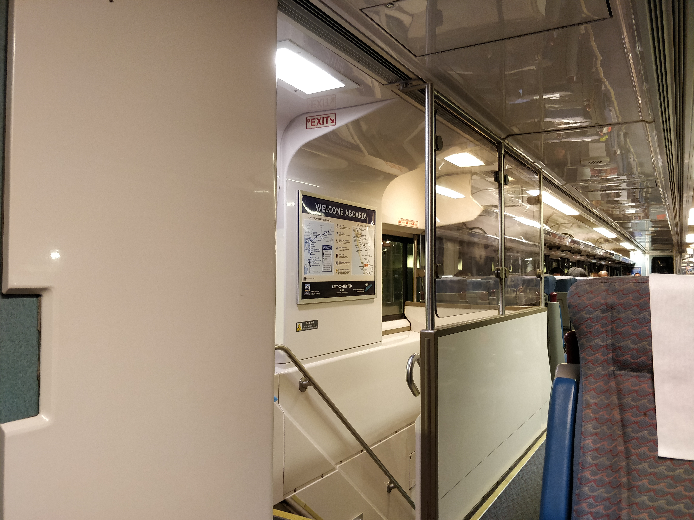

The view towards the aisle
Well, before you see the results, let's explain how this works.
I selected eight corresponding points on each image I took; each
of those eight points represent the location of the same objects
as they change position based on the rotation of the camera.
These corresponding points allow us to compute the homography
of an image, which enables the transformations required for image
stitching. In reality, just four points are required for homography,
but additional points provide higher accuracy if well-placed.
I used a matrix very similar to the following to estimate my homography matrices:

Then, plugging in the (x, y) pairs for each of my selected points below, I calculated the most likely entries of the 3x3 homography matrix via least squares.
 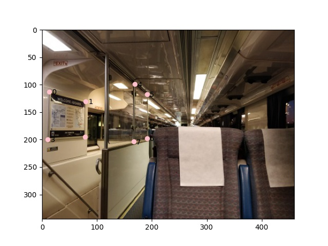
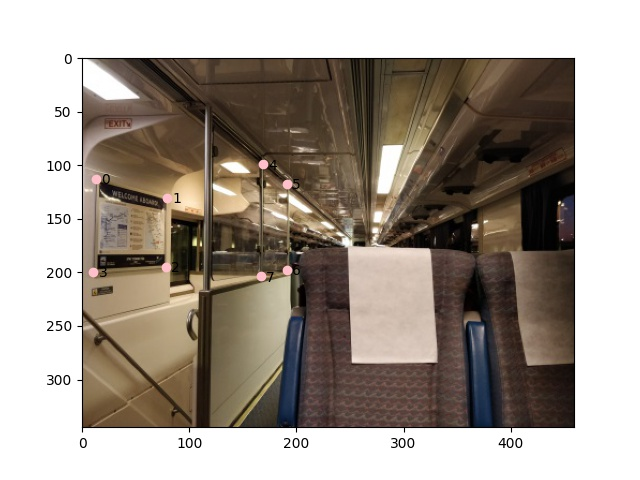
Eight input points around rectangles in the train.
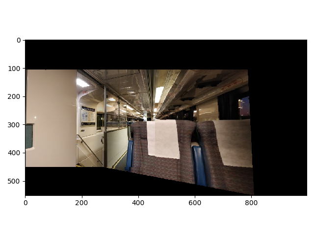
A mosaic of the two extends the view using just one image. As you can see, the rightmost photo is stretched such that its points align onto the left photo's points, which allows the two photos to extend each other.
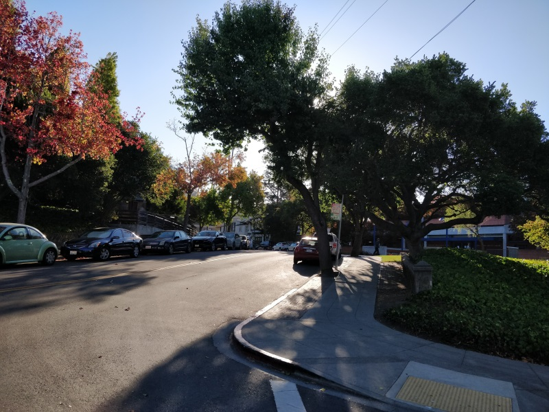
A view of Scenic Blvd. going eastward to campus.
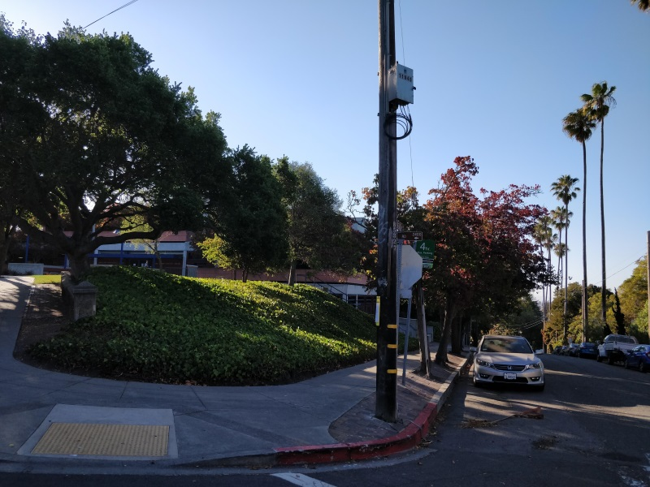
Going westward to downtown.
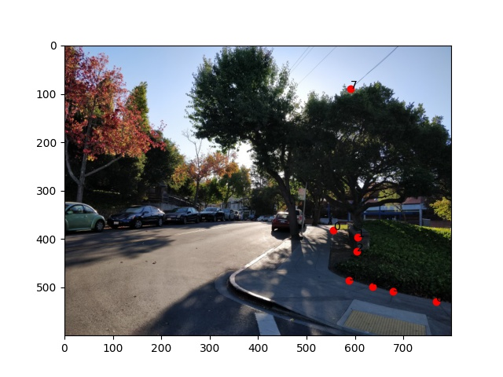
Eight input points around the sidewalk
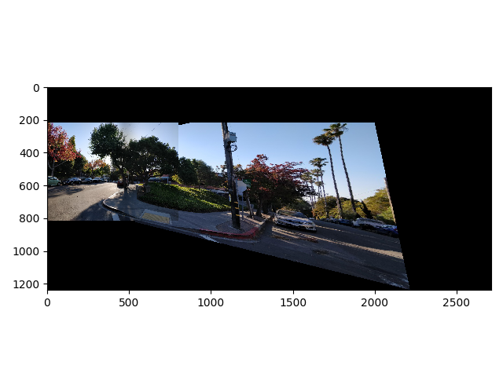
A mosaic of the two.
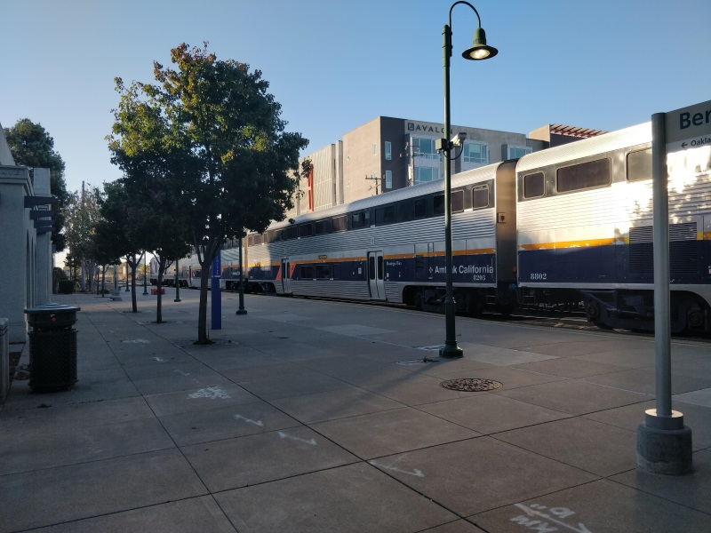

Berkeley's train station with a train in-station!
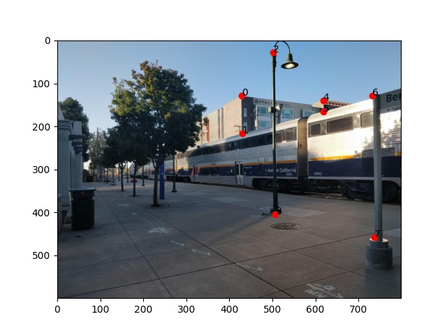
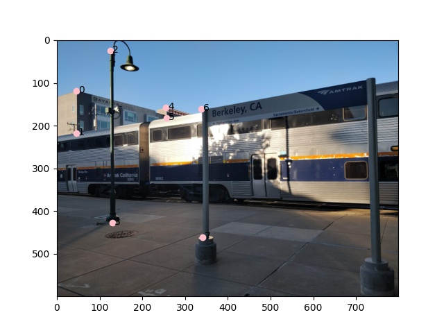
Eight input points along the train.
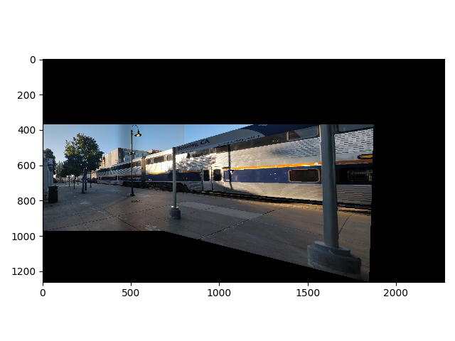
A mosaic of the two.
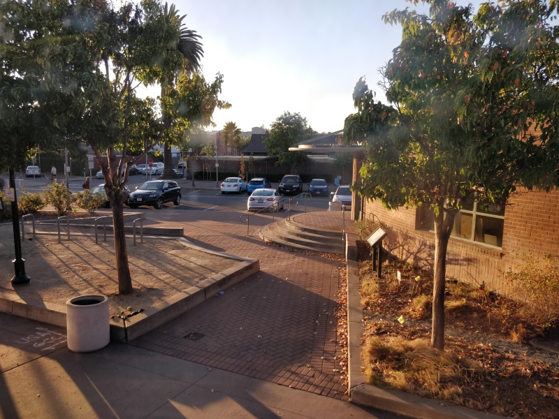
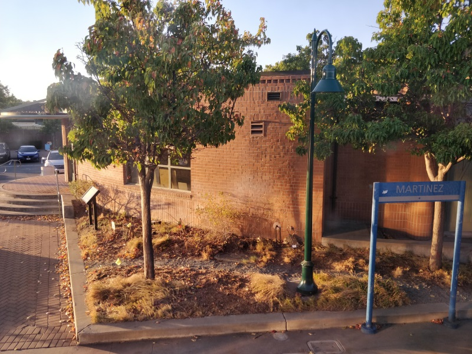
Martinez's train station from my train.
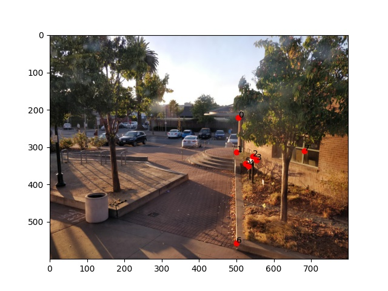
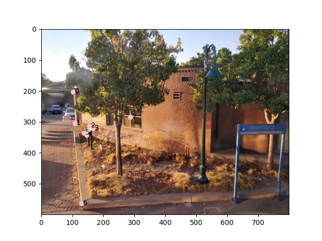
Eight input points along the ouside of the station.
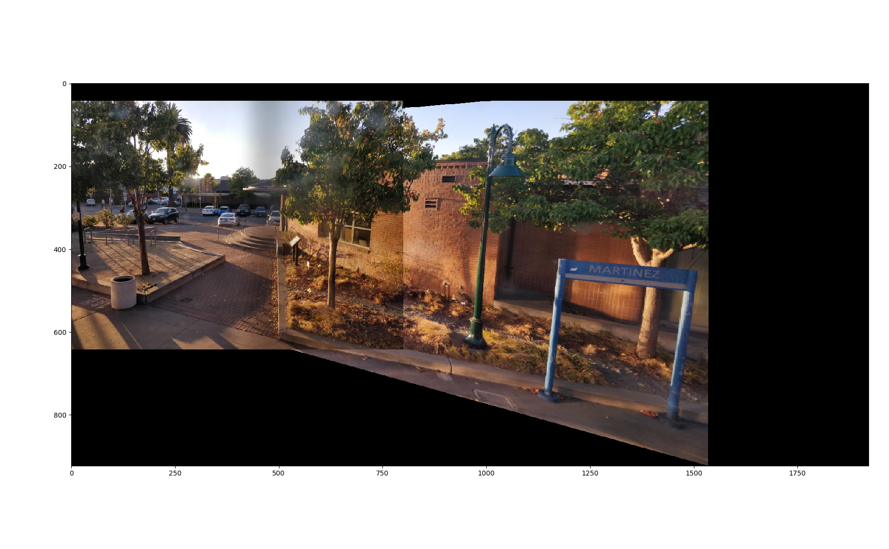
A mosaic of the two.